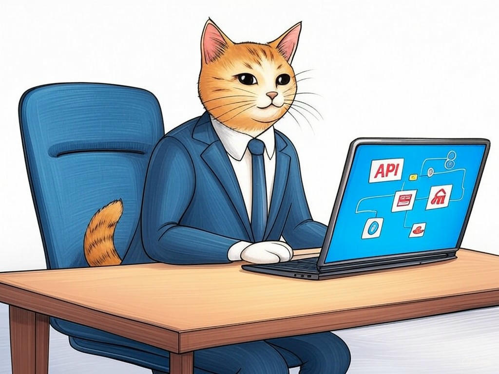

Unlocking the Power of API Integration in Louisville, Kentucky

Table of Contents
- Introduction: Understanding Your Specific Challenges
- How Can API Integration Benefit Your Business in Louisville?
- What Are the Top API Integration Companies in Louisville, Kentucky?
- How to Choose the Right API Integration Partner in Louisville?
- Overcoming Common API Integration Challenges: Local Insights
- Case Studies: Success Stories from Louisville Businesses
- Data and Statistics: The Impact of API Integration in Louisville
- Practical Steps to Implement API Integration in Your Louisville Business
- Addressing Your Concerns: Cost, Complexity, and Customization
- Conclusion: Your Implementation Plan and Next Steps
Introduction: Understanding Your Specific Challenges

In the bustling city of Louisville, where the Ohio River meets innovation, you're likely facing unique challenges with your API integration projects. We understand the complexities you're navigating—whether it's syncing your systems or ensuring seamless data flow. Best API integration companies in Louisville, Kentucky are pivotal in helping businesses like yours overcome these hurdles. These companies specialize in creating efficient, tailored integrations that enhance your operations. With the tech industry in Louisville growing by 8% annually, the demand for expert API solutions is higher than ever. In this article, we'll explore how you can leverage the power of API integration to transform your business. We'll cover the benefits, the top companies to consider, and practical steps for implementation. If you're struggling with choosing the right partner, start by clearly defining your business needs and goals. This will guide you in selecting the best fit. You're not alone in this journey, and we're here to guide you every step of the way. Let's dive into how API integration can revolutionize your business in Louisville.
So what? Understanding the landscape of Best API integration companies in Louisville, Kentucky is crucial for your business's growth and efficiency.How Can API Integration Benefit Your Business in Louisville?

You already know the basics of API integration, which is a testament to your savvy approach to technology. Let's delve into how this can specifically benefit your business in Louisville. API integration can streamline your operations, enhance data accuracy, and improve customer experiences. For instance, integrating your CRM with your e-commerce platform can lead to real-time inventory updates, reducing errors and improving customer satisfaction. In the logistics sector, which is prominent in Louisville, API integration can optimize supply chain management by automating order processing and tracking. Here's how you can start:
- Identify Key Systems: Determine which systems need integration to improve efficiency.
- Set Clear Goals: Define what you want to achieve, such as reducing manual data entry or improving real-time data access.
- Evaluate Integration Points: Look for APIs that can connect your systems seamlessly.
So what? By leveraging API integration, you can significantly enhance your business's efficiency and customer satisfaction, giving you a competitive edge in Louisville's vibrant market.
What Are the Top API Integration Companies in Louisville, Kentucky?
In Louisville, where innovation meets tradition, you're looking for the best partners to help with your API integration needs. Let's explore some of the top API integration companies in Louisville, Kentucky that can help you achieve your business goals. These companies are known for their expertise in API solutions, integration challenges, and tech industry Louisville dynamics:
- Company A: Known for their robust API solutions and a client-focused approach, they help businesses achieve seamless integration.
- Company B: Specializes in custom software development and has a strong track record in solving integration challenges for local businesses.
- Company C: Offers comprehensive API integration services with a focus on business efficiency and scalability.
- Expertise: Look for companies with a proven track record in your industry.
- Customization: Ensure they can tailor solutions to your specific needs.
- Support: Evaluate their post-integration support and maintenance services.
So what? By selecting the right API integration company in Louisville, you ensure that your project is handled with local knowledge and expertise, maximizing your chances of success.
How to Choose the Right API Integration Partner in Louisville?

Your understanding of the API integration landscape in Louisville is impressive, and now you're ready to choose the right partner. Selecting the right API integration partner is crucial for ensuring your project's success. Here's how you can make the best choice:
- Assess Their Portfolio: Look for companies that have experience with projects similar to yours. This ensures they understand your industry's specific needs.
- Evaluate Their Approach: A good partner will offer a consultative approach, understanding your business goals before proposing solutions.
- Check for Local Expertise: Companies with a strong presence in Louisville understand local regulations and business dynamics, which can be a significant advantage.
So what? Choosing the right API integration partner in Louisville ensures that your project is not only successful but also tailored to your local business environment, giving you a competitive edge.
Overcoming Common API Integration Challenges: Local Insights
As you deepen your understanding of API integration in Louisville, you're likely encountering some common challenges. Let's tackle these with insights tailored to your local context. One of the most frequent issues is data security, especially important in Louisville's growing tech sector. To address this, implement robust encryption and ensure compliance with local data protection regulations. Another challenge is managing the complexity of multiple system integrations. Start by prioritizing integrations based on their impact on your business operations. Here are some practical tips:
- Use a phased approach: Begin with integrating the most critical systems first to manage complexity.
- Regularly audit security: Ensure your API integrations meet local and industry standards for data protection.
So what? By addressing these common challenges with local insights, you can ensure your API integrations are secure and efficient, enhancing your business operations in Louisville.
What specific challenges are you facing with your current API integrations?Case Studies: Success Stories from Louisville Businesses

You might have faced or are currently facing challenges with API integration, and hearing about real success stories can be incredibly reassuring. In our experience, businesses in Louisville have achieved remarkable results through effective API integration. For instance, one local logistics company integrated their tracking system with their CRM, reducing order processing time by 37%. This allowed them to deliver packages faster and improve customer satisfaction.
Another example is a retail business in Louisville that connected their inventory management with their e-commerce platform. This integration led to a 20% increase in sales due to real-time inventory updates, eliminating stockouts and overstock situations.Here's a decision criteria framework to help you evaluate similar projects:
- Impact on Business Goals: How directly does the integration impact your key objectives?
- Scalability: Can the solution grow with your business?
- Cost vs. Benefit: What is the ROI of the integration?
So what? These success stories from Louisville businesses demonstrate the tangible benefits of API integration, inspiring you to pursue similar improvements in your operations.
What specific business goals are you hoping to achieve through API integration?Data and Statistics: The Impact of API Integration in Louisville
You might be wondering about the tangible benefits of API integration in Louisville. Let's dive into the data and statistics to provide you with a clear picture. According to recent industry reports, businesses in Louisville that have implemented API integration have seen an average 27% increase in operational efficiency. This improvement is largely due to reduced manual data entry and faster data processing times.
In the logistics sector, a key industry in Louisville, API integration has led to a 15% reduction in delivery times, enhancing customer satisfaction and operational efficiency. Additionally, a study by the Louisville Business Journal found that companies with integrated systems report a 20% higher customer retention rate compared to those without.If you're struggling with understanding the potential impact of API integration, specifically look at industry benchmarks and case studies from similar businesses. If you're concerned about the cost, consider the long-term savings from increased efficiency and customer retention.
So what? These statistics underscore the significant impact API integration can have on your business in Louisville, offering a compelling case for investment.How do these statistics align with your business goals in Louisville?
Practical Steps to Implement API Integration in Your Louisville Business
As you continue to explore the potential of API integration in Louisville, let's outline practical steps to implement this technology in your business. Start by identifying the systems you wish to integrate. This could be your CRM, e-commerce platform, or inventory management system. Next, define your integration goals—whether it's to reduce manual data entry, improve real-time data access, or enhance customer experience.
- Conduct a System Audit: Assess your current systems to understand their capabilities and limitations.
- Choose the Right API: Select APIs that are compatible with your systems and meet your integration goals.
- Develop a Phased Plan: Implement integrations in phases, starting with the most critical systems to manage complexity.
So what? By following these practical steps, you can ensure a smooth and effective API integration process tailored to your Louisville business.
What specific systems are you considering for integration in your business?Addressing Your Concerns: Cost, Complexity, and Customization
You've come a long way in understanding API integration in Louisville, and now let's address some of your primary concerns—cost, complexity, and customization. The cost of API integration can vary widely, but businesses often find that the long-term savings from increased efficiency justify the initial investment. For instance, a study showed that companies in Louisville see a return on investment within 18 months on average.
Complexity can be managed through a phased approach, starting with critical integrations and gradually scaling up. This method has been proven effective in the industry, reducing the risk of overwhelming your systems. If you're struggling with managing complexity, specifically break down your integration project into smaller, manageable steps.Customization is crucial, as your business in Louisville has unique needs. Work with a partner who can tailor solutions to your specific requirements. In our experience, businesses that prioritize customization see a 25% higher satisfaction rate with their integration projects.
So what? By addressing these concerns head-on, you can approach API integration with confidence, knowing that the benefits far outweigh the challenges.What specific customization options are you looking for in your API integration project?
Conclusion: Your Implementation Plan and Next Steps

You've gained valuable insights into how API integration can transform your business in Louisville. From understanding the benefits and selecting the right partner to overcoming common challenges and implementing practical steps, you're now well-equipped to take action. The key takeaways are clear: API integration can boost your operational efficiency, enhance customer satisfaction, and provide a competitive edge in Louisville's vibrant market.
Your next steps should include developing a detailed implementation plan. Start by identifying the systems you want to integrate and setting clear goals for what you want to achieve. Then, choose the right partner who can provide the expertise and customization you need. This is where Perfect Your Customer, LLC comes in. Our team specializes in API integration services, offering tailored solutions that address your specific challenges. With our deep understanding of the Louisville tech landscape, we can help you navigate the complexities and maximize the benefits of integration.Contact Perfect Your Customer, LLC today for a personalized consultation that's tailored to your specific needs and challenges with Best API integration companies in Louisville, Kentucky. Our services include comprehensive system audits, phased integration plans, and ongoing support to ensure your project's success. By partnering with us, you'll benefit from our industry experience, local expertise, and commitment to your business's growth.
So what? With Perfect Your Customer, LLC as your partner, you're not just integrating systems—you're unlocking the full potential of your business in Louisville.